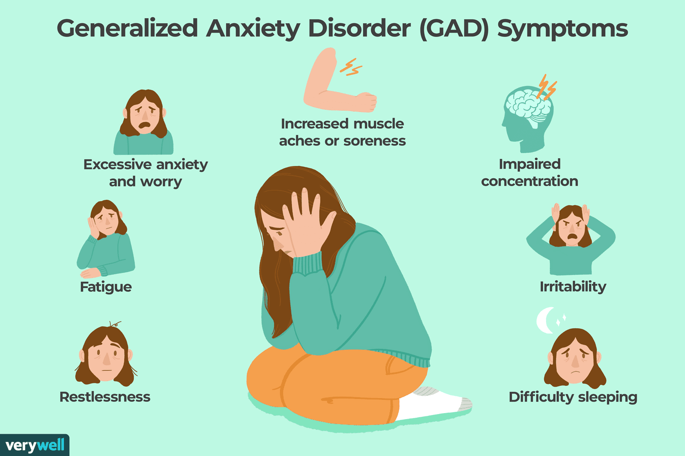

GAD(Generalized Anxiety Disorder)
Generalized Anxiety Disorder (GAD) is characterized by chronic, uncontrollable, and excessive worry about everyday events, lasting for at least 6 months. Symptoms include restlessness, fatigue, muscle tension, and sleep issues. It is caused by a combination of genetics, brain chemistry, and environmental factors, with higher risk in females. While it often creates long-term challenges, GAD is manageable with cognitive behavioral therapy (CBT) and SSRI medication.
Symptoms
- Excessive Worry: Constant, uncontrollable, and free-floating worry that often shifts from one topic (e.g., finances) to another (e.g., health).
- Restlessness: Feeling "on edge" or unable to relax.
- Irritability: Easily annoyed or angered.
- Difficulty Concentrating: Mind going blank or finding it hard to focus.
- Difficulty Handling Uncertainty: Trouble making decisions or fear of making the wrong choice.
- Anticipating the Worst: A constant, overwhelming sense that something bad is about to happen.